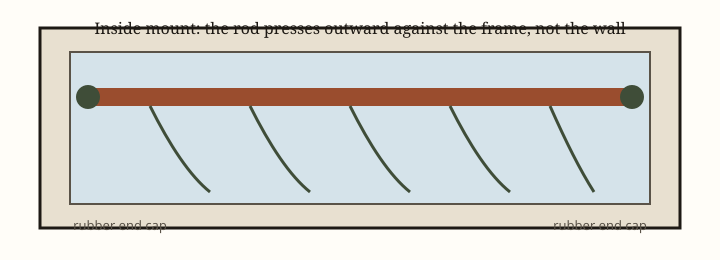

How to hang curtains in an apartment without drilling
Compare tension rods, twist-and-fit rods, adhesive hooks, magnetic rods, and tap-in brackets so you can hang curtains in a rental without guessing which method will mark the wall.
Compare tension rods, twist-and-fit rods, adhesive hooks, magnetic rods, and tap-in brackets so you can hang curtains in a rental without guessing which method will mark the wall.
Most curtain guides start with a stud finder and a level and end with two holes you will later fill with toothpaste. That is fine in a house you own. In a rental, the question is narrower: how do you hang fabric in front of a window without creating a conversation at move-out?
There are five honest methods. Only two of them are truly hole-free. The others trade a little risk for a little more strength or for windows that will not accept a tension rod. This guide walks through each method, what weight it can reasonably handle, and how to get closer to blackout without drilling into drywall.

Hanging a light cotton panel so the place looks finished is a different project from blocking a streetlight so you can sleep after a night shift. Be clear about the job before you pick hardware:
Heavy blackout panels on a wide living-room window are the hardest no-drill problem. Sheer or cotton panels on a standard bedroom window are the easiest. If you need serious darkness, read this page together with the guide to renter-friendly blackout without drilling.
Also measure the window the way the hardware cares about, not just the glass:
Write the numbers down. A rod that is “adjustable from 30 to 45 inches” is not a 46-inch solution.
A spring-loaded tension rod is the default rental tool for a reason. You twist to extend it, the spring pushes rubber or plastic caps into the inside of the frame, and nothing is pierced.
Best for: lightweight or midweight curtains, shower curtains, closet openings, and narrower windows.
Poor for: wide spans, very heavy blackout panels, and frames that are crumbling, metal and slick without grippy caps, or bowed.
The failure mode is familiar: the rod looks fine on day one and then walks downward, or it pops out at 2 a.m. You can reduce that by:
Inside-mount tension rods will not give you the “hotel drapes stacked past the window” look. They also fight with deep blinds. If the existing blinds already fill the frame, the rod may have nowhere honest to sit. In that case, look at outside-mount options below instead of forcing a rod in front of the slats.
Some rods use a mechanical twist rather than a skinny spring, with wider, grippier feet that press into the frame or wrap the casing. A twist-and-fit curtain rod often feels more secure than a basic tension rod and still avoids holes.
Wrap-around or frame-hugging designs are useful when you want the fabric to turn the corner and close the side light gap — the gap that makes a room feel like it is still daytime. They are also useful when you want an outside-mount look without screws.
Check whether the design presses on painted trim. Soft paint on old casing can imprint. Put a felt pad or the manufacturer’s rubber foot between the hardware and a delicate finish, and do not crank the twist as if you were closing a vise.
This is the method people try after watching a 20-second video. It can work. It can also take a postcard-sized patch of paint off the wall.
A pair of jumbo adhesive hooks plus a lightweight curtain rod is an outside-mount solution: the curtains can be wider than the window, which looks better and blocks more light. The hook’s listed weight, however, assumes a perfect surface and a static load. Curtains are not static. People pull them. Windows create drafts. Dust adds weight over time.
Practical rules:
If you want a deeper look at why some hooks hold a winter coat and others skate off the wall, use the guide to adhesive hooks that actually hold. The same wall-type rules apply here.
Do not use bathroom-steam-grade hope with indoor hooks next to a shower window. Humidity is its own project.
A magnetic curtain rod is excellent on a metal door, a metal window frame, or some steel patio doors. It is useless on wood, vinyl, and drywall, no matter how strongly the listing implies otherwise.
If a magnet snaps to the frame through a piece of paper, you likely have enough steel. If it does not, stop shopping in this category. Magnetic rods are ideal for apartment front doors with glass inserts, for basement windows with metal frames, and for anyone who wants privacy on a door they open twenty times a day. Keep the curtains short and light so the magnets are not peeling themselves off with leverage.
Brackets that tap into the top of the window casing with small nails are popular because they hold more weight than a tension rod and they avoid drywall anchors. They are still a mark in wood or painted trim.
If your lease says “no holes,” this method is a no. If your lease is silent and the casing is solid wood, the holes are small and can often be filled later, but they are holes. Do not describe them to yourself as invisible. Photograph the trim before and after, and keep the leftover filler that matches as closely as you can.
This method exists in the guide so you can make that tradeoff on purpose. It is not the default recommendation.
No-drill hardware likes lighter fabric more than homeowners’ forums do. That does not mean you are stuck with sheers.
A pair of room-darkening curtain panels plus a properly sized rod will do more for sleep than a luxury fabric on a rod that keeps slipping.
If the existing vinyl blinds stay up — and in many rentals they must — hang the rod so the curtains clear the tilt wand and do not crush the slats. You can usually keep the blinds for daytime privacy and use curtains at night.
The window is too wide. One rod at maximum extension is a trampoline. Split the span or change methods.
The frame is slick paint or metal. Hard plastic caps skate. Gripeier caps or a different method will save you the midnight crash.
The curtains are too heavy for the story you told yourself. If you need heavy fabric, you need either a stronger no-drill system or a conversation with the landlord about proper brackets.
You mounted adhesive hooks on paint that is still curing. This is one of the faster ways to remove a perfect hook-shaped flake of latex.
You blocked an emergency opening. Bedroom windows that are fire-escape routes should still open. Inside-mount rods are usually easy to pop out. Do not screw, tape, or wedge a window shut in the name of blackout. See the blackout guide for layering ideas that still let you open the sash.
Some living-room windows are wide, heavy, and topped by weak drywall and ornate trim. No-drill methods become a pile of compromises. A short written note to the landlord — “May I install two curtain brackets in the studs above the living-room window and fill them at move-out?” — is not a failure. It is how you avoid a $90 rod project that still sags.
For everyone else, start with the least permanent method that can carry the fabric you actually bought. A well-fitted tension rod and a pair of panels that clear the sill will change how a rental feels more than most people expect, and it will come down in two minutes when the truck is outside.
An inside-mount tension rod or a twist-and-fit rod that presses against the window frame. Both avoid wall holes. They work best with lighter curtains and a window opening that is square and sturdy.
Sometimes, if the rod and curtains stay under the real-world weight of the hook pair and the paint is fully cured. Treat the listed weight as optimistic, wait the full cure time, and do not use indoor hooks in a steamy bathroom.
They avoid wall anchors, but they are not hole-free. They tap into the upper window casing and leave small nail marks. Disclose that to yourself before you buy if your lease bans any marks in wood trim.